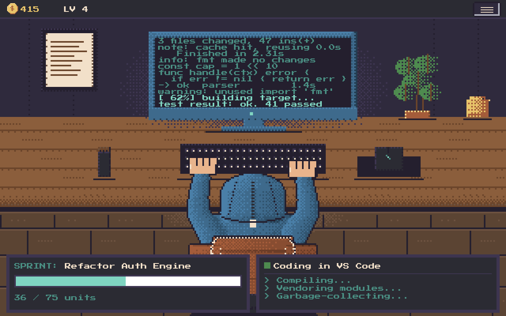
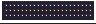
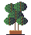
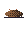
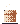
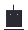

dexel
A cozy pixel-art companion that runs on your real typing.
curl -fsSL https://raw.githubusercontent.com/jawwadzafar/dexel/main/install.sh | bash
irm https://raw.githubusercontent.com/jawwadzafar/dexel/main/install.ps1 | iex
No sudo, no elevation — installed and running. Full install notes ↓

Get started
One line, and dexel is running
No sudo, no elevation, no autostart. Installed, added to your app grid, and running. Remove it any time with dexel uninstall.
curl -fsSL https://raw.githubusercontent.com/jawwadzafar/dexel/main/install.sh | bash
Works on Linux and macOS (Apple silicon), and on Windows via Git Bash / MSYS2 / Cygwin or WSL. On macOS it installs the native Dexel.app window into ~/Applications and opens it — the desktop window is the default, not the browser. The build is unsigned; the installer clears the Gatekeeper quarantine for you (first launch may still need a right-click → Open), or build from a clone.
irm https://raw.githubusercontent.com/jawwadzafar/dexel/main/install.ps1 | iex
Run in PowerShell.
What it does
Pure idle. Nothing to feed or lose.
There are no meters and no hunger. Leave it running, keep working, and watch the desk fill in.

Runs on real typing
Global keystroke and mouse counts advance sprints — from whatever app you're actually working in, not just the game window.
Sprints → cash → store
Completed sprints pay coins. Spend them on hoodies, chairs, keyboards, plants and more — with colours as items and level-locked unlocks that all render on the desk.

Sessions & history
An activity log (Today / Lifetime), a 30-day history with streaks and insights, and a per-signal breakdown of how coins were earned — all derived from counts.

Cozy details
A gold coin HUD, sound effects, click reactions, buddies on the desk, and pixel art generated from committed code — so every sprite is a reviewable diff.

Honest by design
Moods and idle time reflect only what the platform can actually see. If it can't see globally, it freezes rather than guessing — it never claims a workday it didn't witness.

One binary
A Go backend embeds the frontend and every sprite — nothing to unpack. A native desktop window built with Tauri is the default on macOS and available everywhere else; the browser is the fallback.
Look inside
A whole little desk to run
Press S for the store, A for the activity log, H for history.
The defining constraint, not a footnote
Counts and durations only. Never content.
Dexel records that a key was pressed and that the mouse moved — never which key, never any typed text, never the clipboard. It's the whole point.
- Never what you type. Only that you did — no keycodes, no text, no clipboard.
- App names, never window titles. The foreground signal is an app name — never a document or URL.
- Enforced by tests, not promises. A structural allow-list test fails the build if a content-shaped field is ever added.
- 100% local. Everything runs on your machine over loopback. Nothing phones home.
Ready when you are
Bring dexel to your desk
Grab the latest release, or install with the one-liner above.